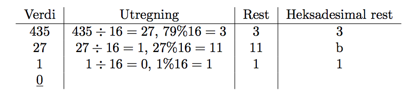
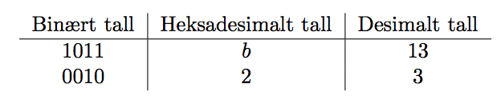

Utregningen fra et desimalt tall til et heksadesimalt tall følger de samme linjene som konvertering fra et desimalt tall til et binært tall, bortsett fra at vi deler p˚a 16 i steden for 2. Algoritmen blir da som følger: • Del tallet p˚a 16 (heltalssdivisjon). F˚ar vi rest? – Ja: skriv ned resten – Nei: skriv 0 • Start p˚a toppen igjen, helt til svaret p˚a heltallsdivisjonen er 0 Hvis vi prøver dette for tallet 43510 f˚ar vi følgende utregning:  Det ferdige heksadesimale tallet leser vi s˚a nedenfra og opp i kolonnen Heksadesimal rest. I dette tilfellet er 43510 = 1b316 Det ˚a finne resten ved heltalsdivisjon med 16 er litt komplisert ˚a gjøre i hodet, men med kalkulator er det en smal sak. La oss ta for oss v˚art eksempel: • Kalkulatoren gir at 435 ÷ 16 = 27, 1875 • Vi kan se bort i fra det etter komma, og regne videre, n˚a ganger vi 16 med 27, alts˚a 16∗27 = 432 • Deretter tar vi differansen av det oprinnelige tallet, 435, og produktet i det siste regnestykket, 432, alts˚a 435 − 432 = 3 Oppskriften blir det samme for alle rundene vi m˚a gjennom. Vi kan trøste oss med at siden vi deler med et relativt stort tall, 16, blir regnestykkene raskt enk
I korthet g˚ar dette ut p˚a ˚a gjøre metoden for konvertering fra heksadesimale tall til binære tall, bare baklengs. I steden for ˚a gjøre hver enkelt siffer i det heksadesimale tallet om til et firesifret binært tall, gjør vi fire og fire siffer i det binære tallet om til et heksadesimalt siffer. Vi begynner bakerst i det binære tallet, alts˚a til høyre, og velger de fire bakerste sifrene. Deretter pluker vi fire nye siffer, helt til det ikke er flere igjen. Dersom det er færre enn 4 siffer igjen m˚a vi bare fylle ut de manglende sifrene med 0. Ikke misforst˚a, vi ønsker ikke ˚a snu rundt p˚a sifrene, men ˚a beholde de i samme rekkefølge. Vi skal se p˚a et eksempel, der vi ønsker ˚a gjøre om 1010112 til heksadesimal. • Vi begynner med ˚a dele tallet opp i grupper p˚a fire, vi starter bakerst. – Først f˚ar vi 1011, deretter 0010 • Vi fyller ut de manglende plassene med to ekstra 0-er • Rekkefølgen av sifrene er akkurat som før vi begynte. Vi har n˚a en tabell som ligner den vi hadde da vi konverterte andre veien:  N˚a kan vi bare konkatenere de heksadesimale sifrene vi har f˚att, og vi m˚a igjen passe p˚a at rekkefølgen er det samme som rekkefølgen til de assosierte siffergruppene i det binære tallet. 2 + b = 2b Hvis du synes det er mer logisk ˚a snu tabellen opp ned for ˚a lese ovenfra og nedover, vær s˚a god. Jeg gjør det p˚a denne m˚aten fordi vi alltid skal begynne telling av fire og fire siffer bakfra.